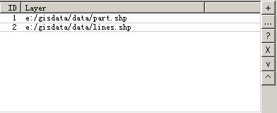

这个面板是控制输入的图层列表。可以是一个图层，也可以是许多图层。
它的主界面如下：

左边是要处理的一系列图层。右边是几个控制按钮。
其中"+"是添加图层所用。"..."是打开图层所用。"?"是选择图层，"X"是删除图层。"v"是把图层往下移动。"^" 是把图层往上移动。
需要解释的是，如果在主界面中有选择的图层，则转换到“混天凌”中的工具时会自动加载到左边 的框中（为了避免重复加载，但是这个实现比较麻烦，现在的实现有很多问题）。"..."和"?"的最主要区别就是这个。"..."是选择除主界面之外的 图层（需要另外加载）"?"是选择已经有主界面选择的图层。另外，现在的程序中"X"实现得有问题，"v", "^" 还未实现。
输入面板的代码在geosings.ui.commondlg.LayersPanel.LayersPanel 的类中
| geosings, 输入面板 | 返回主目 录 |